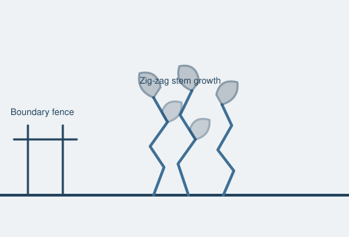

Knotweed is one of the few issues that can single-handedly derail a mortgage application. Here's what to look for and what happens if it's found.

Japanese knotweed is a fast-growing invasive plant that can damage hard surfaces, drains and, in some cases, structures if left unmanaged close to a building. Because of this, most mainstream mortgage lenders use a standard risk-based scale (from the RICS knotweed guidance) to decide whether to lend, and on what terms, when knotweed is present on or near a property.
It's easiest to identify in summer when in full leaf and flower; in winter it dies back to brown, dead-looking canes, which can make it harder to spot during a winter survey — worth flagging to your surveyor if you know the garden had visible growth earlier in the year.
During a Level 2 or Level 3 survey, we visually inspect the garden, boundaries and any land within reasonable view of the property for signs of knotweed (live or dead canes), and note the approximate distance from the building if found. We also look at neighbouring gardens and adjacent land visible from the property, since knotweed spreading from a neighbour's land is a common scenario in London's densely packed gardens.
A Level 2 or 3 survey includes a visual check for knotweed as standard.
Get QuoteTell us about the property and we'll come back with the right survey level within 24 hours.
All London postcodes and the M25 corridor.
Within 1 working day. Open Monday, Tuesday, Wednesday, Thursday and Friday, 8am–6pm.
It's found across many London boroughs, particularly near railway lines, waterways and larger gardens, so it's worth having it checked for as part of your survey.
It depends on the extent of the infestation and its proximity to the property; many lenders will require a management plan from a specialist contractor before agreeing to lend.
Yes, our surveyors will flag visible signs of Japanese knotweed during the inspection as part of assessing risks to the property.
Costs vary depending on the size of the infestation and treatment method, from a few hundred pounds for a monitored herbicide programme to several thousand for excavation, which is why an early survey finding matters.
Contact a specialist invasive species contractor promptly, early treatment is more effective and cheaper than waiting once it's established further.
It can affect drains, paving and outbuildings, and in some cases masonry, which is why identifying it early through a survey matters before you buy.